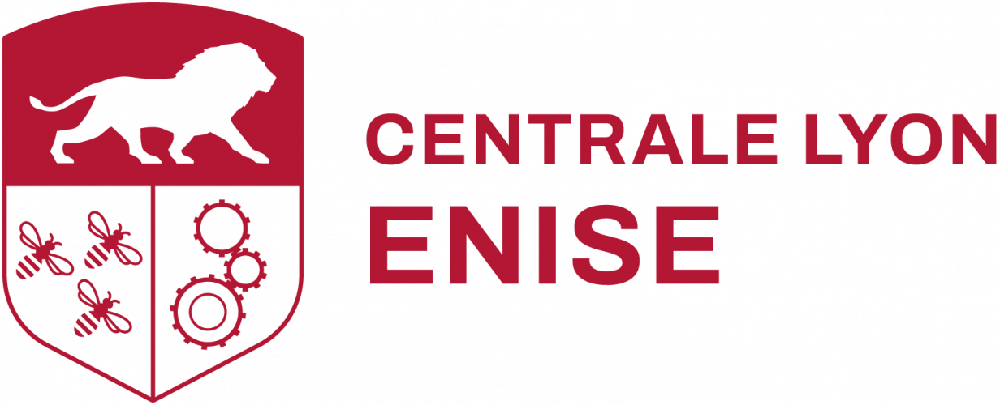
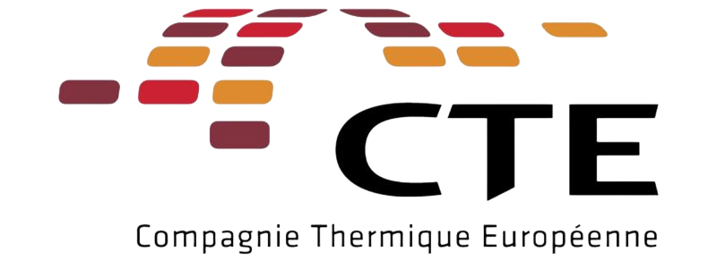
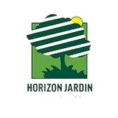
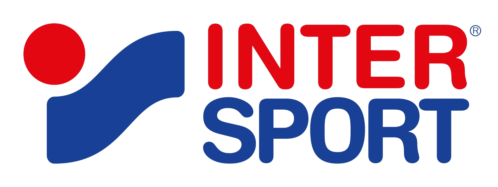
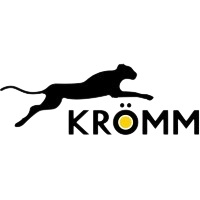
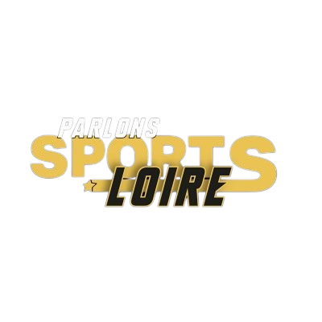
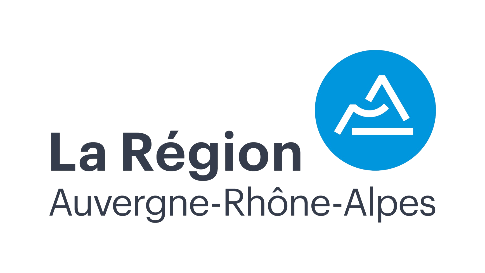

LE PROJET
AMB ENISE
est une association à but non lucratif composée d’une équipe de 15 étudiants de l’École Nationale d’Ingénieurs de Saint-Étienne (ENISE). 6 d’entre eux atteindront le sommet du Mont Blanc (à 4807 mètres d’altitude) avec des objectifs solidaires, citoyens et sportifs. La cinquième édition de l’ascension se déroulera en Septembre 2025.
LES PILLIERS
NOUS AIDER
LE BUDGET PRÉVISIONNEL
Le budget prévisionnel du projet s’élève à 23 000 € pour faire l’ascension du Mont-Blanc pour l’équipe de 12 personnes et comprend :
- Les assurances
- La location de matériel d’alpinisme
- Le logement en gîte pour les journées d’acclimatation
- Le logement en refuge et la demi-pension lors de l’ascension
- Les guides de haute-montagne (1 guide pour 2 personnes) pendant 4 jours (2 jours pour l’acclimatation et 2 jours pour l’ascension)
- Les déplacements et la logistique
Comment nous aider ?
La recherche de fond est une étape clef de notre projet !
- LE PARTENARIAT FINANCIER : Il s’agit d’une aide financière qui nous permettra de payer nos dépenses afin d’effectuer notre projet.
- LE PARTENARIAT EN NATURE : Vous pouvez nous aider en nous fournissant du matériel ou en nous assistant dans notre préparation physique et notre formation ou en nous proposant toute autre sorte de service qui pourrait nous aider à accomplir notre projet.
Notre contrepartie
Chaque partenaire aura la possibilité d’avoir son logo floqué sur la banderole que nous acheminerons en haut du Mont-Blanc. Chaque année nous mettons tout en œuvre pour mettre en avant nos sponsors sur nos réseaux sociaux (LinkedIn, Instagram, Facebook...) et publions des articles dans la presse locale.
Vous serez alors visible au sommet, mais également sur les vidéos et photos faites tout le long de la préparation ainsi que sur les réseaux sociaux de l’équipe : Facebook, LinkedIn, Youtube et Instagram afin de toucher le maximum de clients potentiels.
De plus, c’est une manière originale de promouvoir votre entreprise en donnant une image solidaire et citoyenne à celle-ci.
Pour participer à notre incroyable aventure, devenez notre sponsor, ainsi vous serez un ambassadeur du projet AMB..
Le projet AMB 2025 se clôturera par un événement ouvert à tous avec une exposition photo et vidéo retraçant l’évolution de notre projet et une conférence durant laquelle nous présenterons un retour d’expériences.








NOUS CONTACTER